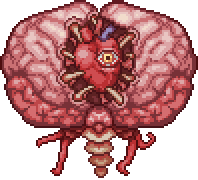

Cérebro de Cthulhu

|

|
Descrição
O Cérebro de Cthulhu, representa no jogo como o Cérebro da Entidade Cthulhu, o ser primordial escondido no lado escuro da Lua.
Ele pode ser invocado quando os jogadores destroem 3 Corações de Carmesim em um mundo com Carmim.
Também pode ser invocado com uma Espinha Sangrenta, um item construído com 15 vértebras em um altar demoníaco.
Estatísticas
Dano: 30
Vida Máxima: 3000
Defesa: 14
Recompensas
Minério de Carminita (40-90) - 100%
Chocalho de Osso - 5%
Máscara/Troféu do Cérebro de Cthulhu - 10%
Boss Anterior Próximo Boss